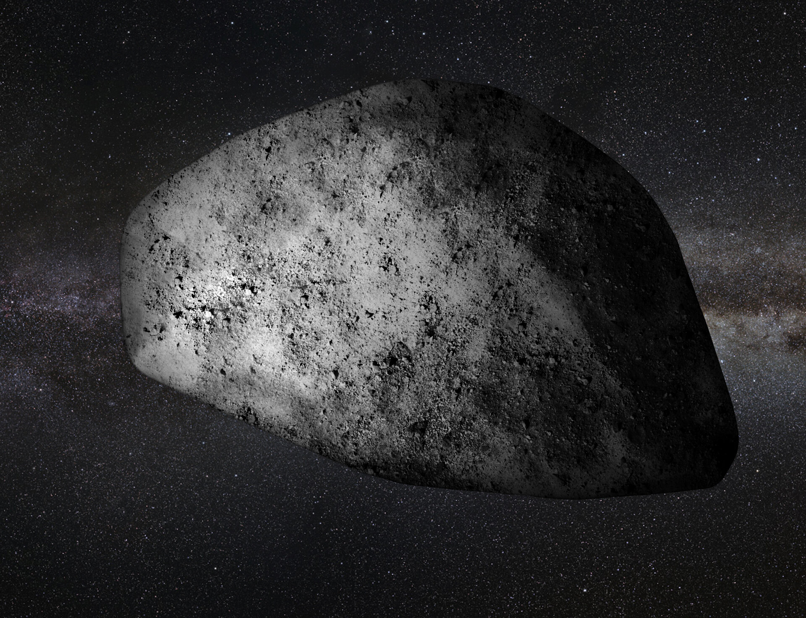
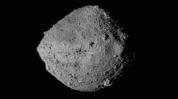
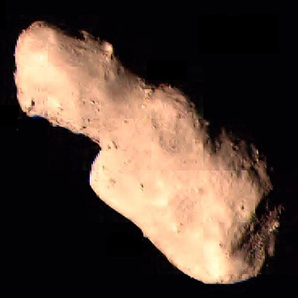

Apophis
Size: 340 meters
Closest Approach: April 13, 2029
Interesting Fact: Apophis was once feared to collide with Earth, but recent studies have shown no risk for the next 100 years.

Bennu
Size: 500 meters
Closest Approach: September 25, 2135
Interesting Fact: Bennu is the target of NASA’s OSIRIS-REx mission, which successfully collected a sample from its surface in 2020.

Toutatis
Size: 2.5 kilometers
Closest Approach: December 12, 2012
Interesting Fact: Toutatis is a large asteroid that approaches Earth every four years and has a tumbling, irregular motion.

Eros
Size: 16.8 kilometers
Closest Approach: January 31, 2012
Interesting Fact: Eros was the first asteroid to be orbited and landed on by a spacecraft (NEAR Shoemaker).

Ganymed
Size: 32.1 kilometers
Closest Approach: October 13, 2024
Interesting Fact: Ganymed is the largest near-Earth asteroid, with a highly reflective surface.

Phaethon
Size: 5.8 kilometers
Closest Approach: December 10, 2026
Interesting Fact: Phaethon is known for its association with the Geminid meteor shower.

1999 RQ36
Size: 560 meters
Closest Approach: September 24, 2135
Interesting Fact: 1999 RQ36 is another name for Bennu, and it has a 1 in 2,700 chance of impacting Earth in the 22nd century.

Don Quixote
Size: 18 kilometers
Closest Approach: May 16, 2030
Interesting Fact: Don Quixote is a near-Earth comet that spends most of its time in the outer solar system.

Geographos
Size: 5.1 kilometers
Closest Approach: August 29, 2026
Interesting Fact: Geographos is one of the most elongated asteroids known.

1950 DA
Size: 1.3 kilometers
Closest Approach: March 16, 2880
Interesting Fact: 1950 DA has a small chance of impacting Earth in the year 2880, making it one of the most dangerous known asteroids.

1998 OR2
Size: 2.2 kilometers
Closest Approach: April 29, 2020
Interesting Fact: 1998 OR2 passed safely by Earth in 2020 but was classified as a Potentially Hazardous Asteroid due to its size and proximity.

1999 KW4
Size: 1.3 kilometers (primary) & 0.5 kilometers (secondary)
Closest Approach: May 25, 2019
Interesting Fact: 1999 KW4 is a binary asteroid system, meaning it has two bodies orbiting each other.

3200 Phaethon
Size: 5.1 kilometers
Closest Approach: December 10, 2026
Interesting Fact: 3200 Phaethon is associated with the Geminid meteor shower and has an unusual orbit that brings it very close to the Sun.

2002 AJ129
Size: 0.5 kilometers
Closest Approach: February 4, 2027
Interesting Fact: 2002 AJ129 is classified as a potentially hazardous asteroid due to its size and proximity to Earth's orbit.

46610 BES
Size: 1.3 kilometers
Closest Approach: May 22, 2023
Interesting Fact: 46610 BES is a binary asteroid, with a satellite orbiting it.

2022 VP1
Size: 0.002 kilometers
Closest Approach: November 2, 2020
Interesting Fact: 2022 VP1 received attention for its minimal chance of impacting Earth on Election Day 2020.

2021 QN1
Size: 0.09 kilometers
Closest Approach: July 5, 2021
Interesting Fact: 2021 QN1 is notable for its fast orbital speed, making it a swift traveler through space.

2021 NY1
Size: 0.1 kilometers
Closest Approach: January 1, 2021
Interesting Fact: 2021 NY1 was discovered shortly before its close approach to Earth.

2019 MO
Size: 0.05 kilometers
Closest Approach: June 18, 2019
Interesting Fact: 2019 MO was discovered shortly before its close encounter with Earth.

2018 XG2
Size: 0.12 kilometers
Closest Approach: December 19, 2018
Interesting Fact: 2018 XG2 was detected as it approached Earth, providing a unique opportunity for observation.

2022 C1
Size: 0.07 kilometers
Closest Approach: March 23, 2022
Interesting Fact: 2022 C1 was tracked by astronomers as it passed within a few lunar distances from Earth.

2008 CA4
Size: 0.16 kilometers
Closest Approach: February 4, 2008
Interesting Fact: 2008 CA4 flew by Earth at a safe distance of about 5,000 kilometers.

2020 EB
Size: 0.012 kilometers
Closest Approach: March 15, 2020
Interesting Fact: 2020 EB was discovered shortly after its close approach to Earth.

2017 YH
Size: 0.05 kilometers
Closest Approach: December 27, 2017
Interesting Fact: 2017 YH had a close approach that came within about 0.2 lunar distances.

2007 TD5
Size: 0.16 kilometers
Closest Approach: October 12, 2007
Interesting Fact: 2007 TD5 is categorized as a potentially hazardous asteroid due to its size and orbit.

2016 AH193
Size: 0.17 kilometers
Closest Approach: January 9, 2016
Interesting Fact: This NEO was detected just days before its closest approach to Earth.

2015 BX14
Size: 0.05 kilometers
Closest Approach: January 27, 2015
Interesting Fact: 2015 BX14 passed at a safe distance of about 0.003 lunar distances.

2014 JX5
Size: 0.04 kilometers
Closest Approach: May 4, 2014
Interesting Fact: 2014 JX5 was detected a few days before it flew by Earth.

2013 PT8
Size: 0.12 kilometers
Closest Approach: August 8, 2013
Interesting Fact: 2013 PT8 was tracked due to its potential close encounter with Earth.

2010 C10
Size: 0.15 kilometers
Closest Approach: February 5, 2010
Interesting Fact: 2010 C10 is categorized as a near-Earth object with potential for mining.

2004 AE1
Size: 0.09 kilometers
Closest Approach: January 12, 2004
Interesting Fact: 2004 AE1 has a very stable orbit around the Sun.

2002 HM7
Size: 0.03 kilometers
Closest Approach: April 29, 2002
Interesting Fact: 2002 HM7 was observed as it approached Earth closely.

2010 QG6
Size: 0.05 kilometers
Closest Approach: August 27, 2010
Interesting Fact: 2010 QG6 is part of the Apollo group of asteroids.

2004 XP14
Size: 0.19 kilometers
Closest Approach: December 26, 2023
Interesting Fact: 2004 XP14 is classified as a potentially hazardous asteroid due to its size and close approaches to Earth.

2019 OR1
Size: 0.03 kilometers
Closest Approach: July 21, 2019
Interesting Fact: This small asteroid was detected just days before its closest approach.

2012 S4
Size: 0.05 kilometers
Closest Approach: September 15, 2012
Interesting Fact: 2012 S4 passed safely by Earth, and its orbit is well tracked.

2020 AF6
Size: 0.09 kilometers
Closest Approach: January 3, 2020
Interesting Fact: 2020 AF6 was discovered shortly after its close approach.

2018 GD1
Size: 0.06 kilometers
Closest Approach: April 23, 2018
Interesting Fact: 2018 GD1 had a notable close approach within a few lunar distances.

2009 ZZ6
Size: 0.14 kilometers
Closest Approach: December 5, 2009
Interesting Fact: This NEO has been closely monitored due to its size and proximity to Earth.

2011 RL43
Size: 0.09 kilometers
Closest Approach: September 5, 2011
Interesting Fact: 2011 RL43 is known for its relatively small size and close orbits.

2008 XR3
Size: 0.18 kilometers
Closest Approach: November 12, 2008
Interesting Fact: This NEO was a subject of study due to its past close approaches.

2006 YF1
Size: 0.20 kilometers
Closest Approach: December 24, 2006
Interesting Fact: 2006 YF1 is on a stable orbit and is tracked regularly.

2018 KP2
Size: 0.07 kilometers
Closest Approach: May 31, 2018
Interesting Fact: 2018 KP2 was observed during its close flyby of Earth.

2020 BP9
Size: 0.08 kilometers
Closest Approach: January 18, 2020
Interesting Fact: 2020 BP9 was discovered shortly before its close approach.

2005 FG21
Size: 0.10 kilometers
Closest Approach: March 22, 2005
Interesting Fact: This NEO is considered a potentially hazardous asteroid due to its size.

2022 JX1
Size: 0.11 kilometers
Closest Approach: February 12, 2022
Interesting Fact: 2022 JX1 has a stable orbit and is regularly monitored.

2011 UC1
Size: 0.15 kilometers
Closest Approach: October 30, 2011
Interesting Fact: 2011 UC1 was closely tracked due to its approach within lunar distance.

2013 BY10
Size: 0.14 kilometers
Closest Approach: January 17, 2013
Interesting Fact: This NEO's path is well-known and monitored frequently.

2021 PT1
Size: 0.07 kilometers
Closest Approach: August 15, 2021
Interesting Fact: 2021 PT1 passed safely by Earth with no impact risk.

2004 XY2
Size: 0.06 kilometers
Closest Approach: May 25, 2004
Interesting Fact: 2004 XY2 is monitored due to its close Earth approach history.

2015 HE145
Size: 0.09 kilometers
Closest Approach: April 2, 2015
Interesting Fact: This NEO has been tracked for several close approaches over the years.

2007 PA8
Size: 0.12 kilometers
Closest Approach: August 6, 2007
Interesting Fact: 2007 PA8 is known for its irregular orbit.

2016 DF3
Size: 0.18 kilometers
Closest Approach: February 23, 2016
Interesting Fact: 2016 DF3 is often a target for observational studies.

2021 RC1
Size: 0.05 kilometers
Closest Approach: September 6, 2021
Interesting Fact: 2021 RC1 had a close encounter with Earth, passing within a few lunar distances.

2003 XZ12
Size: 0.09 kilometers
Closest Approach: December 4, 2003
Interesting Fact: This asteroid was closely monitored due to its proximity during its approach.

2017 DJ2
Size: 0.11 kilometers
Closest Approach: February 16, 2017
Interesting Fact: 2017 DJ2 is notable for its irregular orbit and potential future approaches.